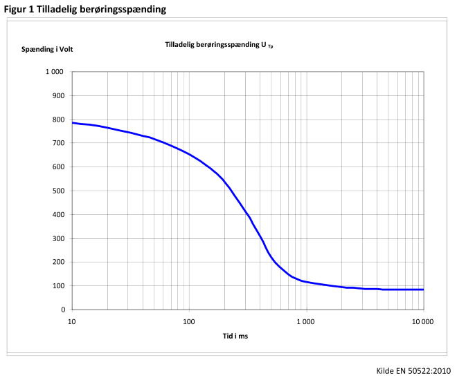

Bekendtgørelse om udførelse af elektriske anlæg
Bekendtgørelse nr. 1114 af 18/08/2016 om sikkerhed for udførelse af elektriske anlæg - gældende.
I medfør af § 5, stk. 1, nr. 1, § 5, stk. 2, § 7, stk. 3, § 31, stk. 1-2, § 34, stk. 2, og § 39 i lov nr. 525 af 29. april 2015 om sikkerhed ved elektriske anlæg, elektriske installationer og elektrisk materiel (elsikkerhedsloven) fastsættes:
Anvendelsesområde
§ 1. Denne bekendtgørelse finder anvendelse for udførelse af elektriske anlæg og primære højspændingsinstallationer, jf. dog stk. 2-3.
Stk. 2. Bekendtgørelsen finder ikke anvendelse for udførelse af elproducerende anlæg, som udføres efter bekendtgørelse om sikkerhed for udførelse og drift af elektriske installationer.
Stk. 3. Bekendtgørelsen finder ikke anvendelse for udførelse af lagre til elektrisk energi, som udføres efter bekendtgørelse om sikkerhed for udførelse og drift af elektriske installationer.
Definitioner
§ 2. I denne bekendtgørelse forstås ved:
- Beskyttelse mod direkte berøring: Foranstaltninger, som forhindrer, at personer kommer i farlig nærhed af spændingsførende dele eller de dele, som kan have en farlig spænding, med dele af kroppen eller genstande.
- Beskyttelse mod indirekte berøring: Beskyttelse af personer fra farer, som kan opstå i tilfælde af fejl fra kontakt med udsatte spændingsførende dele på elektrisk udstyr eller fremmed ledende dele.
- Farezonen: Zonen for arbejde under spænding DL. Område omkring spændingsførende dele, hvor isolationsniveauet til beskyttelse mod elektrisk fare er utilstrækkeligt, når personer rækker ind i eller går ind i området, jf. EN 50110, anneks A.
- Fejlbeskyttelse: Beskyttelse mod elektrisk stød under enkeltfejlforhold.
- Grundbeskyttelse: Beskyttelse mod elektrisk stød under fejlfrie forhold.
- Højspændingsanlæg: Elektriske anlæg med nominel spænding over 1000 V a.c. eller 1500 V d.c.
- Lavspændingsanlæg: Elektriske anlæg med nominel spænding til og med 1000 V a.c. eller 1500 V d.c.
- Ledningsanlæg: Luftledninger og kabler, som indgår i et elektrisk anlæg.
- Lukket elektrisk driftsområde: Adgangsreguleret rum eller område, hvor elektriske anlæg og udstyr betjenes.
- Røranlæg: Alle elektrisk ledende dele, som indgår i et metallisk rørsystem og de elektrisk ledende dele, som er i berøring med rørsystemet.
Udførelse af elektriske anlæg over 1000 V a.c. eller 1500 V d.c.
§ 3. Udføres et elektrisk anlæg over 1000 V a.c. i overensstemmelse med EN 61936-1 med eventuelle nationale forhold gældende for Danmark, anses sikkerhedskravet i elsikkerhedslovens § 3, jf. denne bekendtgørelses §§ 15-20 og §§ 26-36, for opfyldt.
§ 4. Udføres et jordingsanlæg til elektriske anlæg over 1000 V a.c. i overensstemmelse med EN 50522 med eventuelle nationale forhold gældende for Danmark, anses sikkerhedskravet i elsikkerhedslovens § 3, jf. denne bekendtgørelses §§ 15-20 og §§ 26-36, for opfyldt.
§ 5. Udføres et luftledningsanlæg over 1000 V a.c. i overensstemmelse med EN 50341 med eventuelle nationale forhold gældende for Danmark, anses sikkerhedskravet i elsikkerhedslovens § 3, jf. denne bekendtgørelses §§ 15-20 og §§ 26-36, for opfyldt.
§ 6. Udføres et elektrisk anlæg over 1500 V d.c. i overensstemmelse med standarder, der er offentliggjort af Den Europæiske Komité for Elektroteknisk Standardisering (CENELEC) med eventuelle særlige nationale forhold gældende for Danmark, anses sikkerhedskravet i elsikkerhedslovens § 3, jf. denne bekendtgørelses §§ 15-20 og §§ 26-36, for opfyldt.
§ 7. Udføres et elektrisk anlæg i nærheden af metalliske røranlæg i overensstemmelse med EN 50443 med eventuelle nationale forhold gældende for Danmark, anses sikkerhedskravet i elsikkerhedslovens § 3, jf. denne bekendtgørelses §§ 15-20 og §§ 26-36, for opfyldt.
Stk. 2. Sikkerhedskravet anses tillige for opfyldt, hvis nærføringen mellem det elektriske anlæg og et metallisk røranlæg udføres i overensstemmelse med bilag 1 til denne bekendtgørelse.
§ 8. Udføres et elektrisk anlæg ikke eller kun delvist efter de i §§ 3-7 nævnte standarder, skal det dokumenteres, at sikkerhedskravet i elsikkerhedslovens § 3, jf. denne bekendtgørelses §§ 15-20 og §§ 26-36, er opfyldt.
Stk. 2. Tidspunktet for udførelse af det elektriske anlæg angiver hvilken udgave af standardserien, jf. §§ 3-7, der skal anvendes. I de tilfælde, hvor udførelsestidspunktet for det elektriske anlæg ligger mindre end tre år efter færdigprojekteringstidspunktet, kan den på færdigprojekteringstidspunktet i Danmark gældende udgave af standardserien, jf. §§ 3-7, anvendes.
Udførelse af elektriske baneanlæg
§ 9. Udføres den elektriske forsyning til et baneanlæg i overensstemmelse med standarder, der er offentliggjort af Den Europæiske Komité for Elektroteknisk Standardisering (CENELEC) med eventuelle særlige nationale forhold gældende for Danmark, anses sikkerhedskravet i elsikkerhedslovens § 3, jf. denne bekendtgørelses §§ 15-20 og de for spændingsniveauet generelle sikkerhedskrav, jf. §§ 21-25 eller §§ 26-36, for opfyldt.
Stk. 2. Udføres den elektriske forsyning til et baneanlæg ikke eller kun delvist efter de i stk. 1 nævnte standarder, skal det dokumenteres, at sikkerhedskravet i elsikkerhedslovens § 3, jf. denne bekendtgørelses §§ 15-20 og de for spændingsniveauet generelle sikkerhedskrav, jf. §§ 21-25 eller §§ 26-36, er opfyldt.
Stk. 3. Tidspunktet for udførelse af den elektriske forsyning til et baneanlæg angiver hvilke udgaver af standarderne, jf. stk. 1, der skal anvendes. I de tilfælde, hvor udførelsestidspunktet for den elektriske forsyning til et baneanlæg ligger mindre end tre år efter færdigprojekteringstidspunktet, kan de på færdigprojekteringstidspunktet i Danmark gældende udgaver af standarderne, jf. stk. 1, anvendes.
§ 10. Udføres baneanlæg i overensstemmelse med standarder, der er offentliggjort af Den Europæiske Komité for Elektroteknisk Standardisering (CENELEC) med eventuelle særlige nationale forhold gældende for Danmark, anses sikkerhedskravet i elsikkerhedslovens § 3 for opfyldt.
Stk. 2. Udføres baneanlæg ikke eller kun delvist efter de i stk. 1 nævnte standarder, skal det dokumenteres, at sikkerhedskravet i elsikkerhedslovens § 3, jf. denne bekendtgørelses §§ 15-20 og de for spændingsniveauet generelle sikkerhedskrav, jf. §§ 21-25 eller §§ 26-36, er opfyldt.
Stk. 3. Tidspunktet for udførelse af baneanlæg angiver hvilke udgaver af standarderne, jf. stk. 1, der skal anvendes. I de tilfælde, hvor udførelsestidspunktet for baneanlæg ligger mindre end tre år efter færdigprojekteringstidspunktet, kan de på færdigprojekteringstidspunktet i Danmark gældende udgaver af standarderne, jf. stk. 1, anvendes.
Udførelse af elektriske anlæg til og med 1000 V a.c. eller 1500 V d.c.
§ 11. Udføres et elektrisk anlæg til og med 1000 V a.c. eller 1500 V d.c. efter den i Danmark gældende udgave af standardserien for elektriske lavspændingsinstallationer HD 60364, anses sikkerhedskravet i elsikkerhedslovens § 3, jf. denne bekendtgørelses §§ 15-25, for opfyldt.
Stk. 2. Udføres et elektrisk anlæg ikke eller kun delvist efter den i Danmark gældende udgave af standardserien for elektriske installationer HD 60364, skal det dokumenteres, at sikkerhedskravet i elsikkerhedslovens § 3, jf. denne bekendtgørelses §§ 15-25, er opfyldt.
Stk. 3. Tidspunktet for udførelse af det elektriske anlæg angiver hvilken udgave af standardserien, jf. stk. 1, der skal anvendes. I de tilfælde, hvor udførelsestidspunktet for det elektriske anlæg ligger mindre end tre år efter færdigprojekteringstidspunktet, kan den på færdigprojekteringstidspunktet i Danmark gældende udgave af standardserien, jf. stk. 1, anvendes.
§ 12. Batterier, der anvendes i erhvervsmæssige energilagre, skal være egnet og beregnet til formålet og i overensstemmelse med standarder, der er offentliggjort af Den Europæiske Komité for Elektroteknisk Standardisering (CENELEC) med eventuelle særlige nationale forhold gældende for Danmark.
Offentliggørelse af standarder
§ 13. Standarderne, som denne bekendtgørelse henviser til, indføres ikke i Lovtidende, men kan købes ved Dansk Standard eller gennemses ved Sikkerhedsstyrelsen.
§ 14. §§ 15-36 uddyber sikkerhedskravet i elsikkerhedslovens § 3.
§ 15. Et elektrisk anlæg skal udføres, så det ikke kan medføre fare på grund af for høj temperatur, lysbue eller mekanisk påvirkning ved normal drift, specielle driftsforhold, kortslutning eller forventede klimatiske forhold.
§ 16. Overspændinger må ikke medføre fare for personer, husdyr eller ejendom.
§ 17. Et elektrisk anlæg skal have immunitet overfor elektromagnetiske forstyrrelser, så det kan fungere korrekt i det angivne miljø.
§ 18. Elektrisk materiel, der indgår i et elektrisk anlæg, skal tilsluttes og anvendes i overensstemmelse med fabrikantens anvisninger.
§ 19. Et jordingsanlæg skal udføres, så det fungerer under alle forhold og yder sikkerhed for personer på ethvert sted, hvor disse har legitim adgang. Det skal desuden sikres, at det elektriske materiel til jordingsanlæg forbliver intakt og fejlfrit.
§ 20. Elektriske anlæg og andre objekter må ikke anbringes så nær hinanden, at der derved kan opstå fare.
Stk. 2. Ved anbringelse af andre objekter i nærheden af bestående elektriske anlæg skal eventuelle afstandskrav til det elektriske anlæg overholdes.
Stk. 3. Det elektriske anlæg eller objekt, der anlægges sidst, skal placeres under hensyntagen til det allerede placerede.
Sikkerhedskrav for anlæg til og med 1000 V a.c. eller 1500 V d.c.
§ 21. Et elektrisk anlæg skal grundbeskyttes, så personer og husdyr beskyttes mod de farer, der kan opstå ved kontakt med anlæggets spændingsførende dele.
§ 22. Et elektrisk anlæg skal fejlbeskyttes, så personer og husdyr beskyttes mod de farer, der under fejl kan opstå ved kontakt med anlæggets udsatte ledende dele.
§ 23. Et elektrisk anlæg skal beskyttes mod overstrøm, så personer, husdyr og ejendom beskyttes mod de farer, der kan opstå som følge af for høje temperaturer eller elektromekaniske påvirkninger forårsaget af overstrøm.
§ 24. For et elektrisk anlæg skal beskyttelsesledere og enhver anden del, der er beregnet til at føre en fejlstrøm, kunne føre denne strøm uden at antage for høj temperatur.
§ 25. Fejl mellem spændingsførende dele i strømkredse, som forsynes med forskellige spændinger, må ikke medføre fare for personer, husdyr eller ejendom.
Sikkerhedskrav for anlæg over 1000 V a.c. eller 1500 V d.c.
§ 26. Et elektrisk anlæg skal beskyttes mod direkte berøring således, at kontakt med spændingsførende dele eller utilsigtet indtrængen i farezonen omkring spændingsførende dele undgås.
§ 27. Et elektrisk anlæg skal være indrettet med foranstaltninger til beskyttelse af personer mod indirekte berøring, hvor disse har legitim adgang.
§ 28. Et elektrisk anlæg skal være beskyttet med udstyr til automatisk afbrydelse af farlige jordfejl eller til visning af jordfejl.
§ 29. Et elektrisk anlæg skal udføres, så det kan modstå normalt forekommende spændinger, herunder overspændinger.
§ 30. Hvor det er praktisk muligt, skal et elektrisk anlæg udføres, så underspænding, jordfejl eller spændingsudfald af en eller flere spændingsførende ledere ikke medfører fare for personer, husdyr eller ejendom.
§ 31. Et elektrisk anlæg skal have nødvendigt overvågnings-, beskyttelses-, regulerings- og kontroludstyr, så det fungerer sikkert og efter hensigten.
§ 32. Et elektrisk anlæg skal udføres, så der tages hensyn til risikoen for farlige inducerede berøringsspændinger i andre ikke-elektriske anlæg, der er nærført det elektriske anlæg, og der skal om nødvendigt træffes foranstaltninger, der minimerer inducerede berøringsspændinger til et ufarligt niveau for personer og husdyr.
§ 33. Et elektrisk anlæg skal udføres, så arbejde i forbindelse med drift og vedligehold af anlægget kan udføres sikkert.
§ 34. Et elektrisk anlæg skal have advarselsskilte, mærkning og identifikation, så fejlbetjening og ulykker undgås.
Stk. 2. Advarselsskilte skal opfylde bekendtgørelse om sikkerhedsskiltning og anden form for signalgivning.
§ 35. Alle sider af det ydre hegn omkransende et udendørs elektrisk anlæg og adgangsdøre til anlægget skal være forsynet med advarselsskilte.
Stk. 2. Advarselsskilte skal opfylde bekendtgørelse om sikkerhedsskiltning og anden form for signalgivning.
§ 36. Alle adgangsdøre til lukkede elektriske driftsområder skal være forsynet med advarselsskilte.
Stk. 2. I lukkede elektriske driftsområder og i industrielle bygninger skal alle rum med elektrisk udstyr mærkes med information, der identificerer rummet og gør opmærksom på mulige elektriske farer. Denne information skal findes uden for rummet og på hver dør, der giver adgang til rummet.
Stk. 3. Advarselsskilte skal opfylde bekendtgørelse om sikkerhedsskiltning og anden form for signalgivning.
Konstruktioner
§ 37. Bærende konstruktioner skal dimensioneres i overensstemmelse med Eurocodes med tilhørende danske annekser.
§ 38. I forbindelse med statiske beregninger af elektrisk udstyr, bærende konstruktioner og fundamenter skal der tages hensyn til vind- og islast i overensstemmelse med standarder, der er offentliggjort af Den Europæiske Komité for Elektroteknisk Standardisering (CENELEC) med eventuelle særlige nationale forhold gældende for Danmark.
Kabler og ledere
§ 39. Ved fremføring af kabler i bygninger uden for stationsrum skal det sikres, at kabler er tilstrækkeligt brandhæmmende.
§ 40. Hvor kabler krydser hinanden eller placeres nær ved andre kabler, skal de gensidige termiske påvirkninger beregnes for at afgøre minimumsafstanden mellem kablerne. Kan den beregnede minimumsafstand ikke overholdes, skal det på anden vis sikres, at der ikke sker en skadelig påvirkning mellem kablerne.
Stk. 2. Kabler skal installeres i tilstrækkelig afstand fra varmekilder eller adskilles fra disse ved hjælp af termiske isolationsskærme.
§ 41. Kabler skal nedgraves i mindst 0,7 m dybde og være beskyttet af rør, U-profiler eller dækplader.
§ 42. Dækplader, rør og U-profiler af plastmateriale til beskyttelse af kabler i jord skal være røde.
Stk. 2. Dækplader skal have en bredde på mindst 100 mm og være forsynet med følgende advarselstekst: ELKABEL.
Stk. 3. Advarselsteksten, jf. stk. 2, skal
- have en bogstavhøjde på mindst 10 mm,
- være i sort farve og
- gentages med et mellemrum på højst 200 mm mellem hver tekst.
Stk. 4. For dækplader finder stk. 3, nr. 2, kun anvendelse, hvis disse er mærket ved påstempling.
§ 43. Hvor ledere og tilbehør er direkte forbundet til en effektafbryder, en sikringslastafbryder eller en lastafbryder, må værdien og varigheden af mærkekorttidsholdestrømmen for ledere og tilbehør ikke være mindre end den tilsvarende mærkeværdi for det elektriske materiel, det er tilsluttet.
Betjeningsgange
§ 44. Ved betjeningsgange skal der etableres det antal udgange, som giver tilstrækkelig flugtmulighed i tilfælde af en nødsituation.
Stk. 2. Betjeningsgange på mere end 10 m skal have mindst 2 nødudgange.
Overvågnings- og styresystemer
§ 45. Et elektrisk anlægs overvågnings- og styresystem skal udformes, så det indikerer afbryderens position og enhver given fejltilstand.
§ 46. Motorbetjente adskillere, jordsluttere, effektafbrydere, automatsikringer og lastafbrydere skal forsynes med lokal betjening til indkobling og udkobling.
§ 47. Et elektrisk anlæg skal være udført i overensstemmelse med de på tidspunktet for udførelsen gældende regler.
Stk. 2. For mindre ændringer af eksisterende luftledningsanlæg kan de bestemmelser, der var gældende på udførelsestidspunktet, anvendes.
§ 48. Inden et nyt elektrisk anlæg idriftsættes, skal den, der sætter anlægget i drift, sikre, at driften af anlægget varetages af en driftsansvarlig virksomhed, hvor bekendtgørelse om sikkerhed for drift af elektriske anlæg kræver en driftsansvarlig virksomhed.
§ 49. Anvendes den for den pågældende anlægstype gældende udgave af standarden ikke eller kun delvist, jf. § 8, stk. 1, § 9, stk. 2, § 10, stk. 2, og § 11, stk. 2, skal den udførende virksomhed indberette dette via Sikkerhedsstyrelsens elektroniske indberetningssystem. Der skal ske indberetning for følgende:
- Udvidelse af et eksisterende elektrisk anlæg.
- Nyt elektrisk anlæg.
Stk. 2. Dokumentation efter stk. 1 skal indeholde følgende oplysninger og dokumentation:
- Adressen på det elektriske anlæg og eventuelle andre oplysninger, så anlægget entydigt identificeres.
- Tidspunktet for arbejdets udførelse.
- Tidspunktet for færdigprojektering, hvor dette er væsentligt forskelligt fra udførelsestidspunktet.
- Dokumentation for opfyldelse af sikkerhedskravene, jf. § 8, stk. 1, § 9, stk. 2, § 10, stk. 2, eller § 11, stk. 2.
- Dokumentation for kontrol af, at det elektriske anlæg er i overensstemmelse med den tekniske dokumentation.
- Dokumentation for materialevalg og for valg af beskyttelsesudstyr.
- Beregninger og vurderinger, som danner grundlag for overholdelse af sikkerhedskravene.
- Tegninger og skematisk oversigt over det elektriske anlæg.
- Entydig identificerbar dokumentation for hvilken del af det elektriske anlæg, der er udført arbejde på.
Stk. 3. Indberetning, jf. stk. 1, skal foretages senest 14 dage efter arbejdets udførelse.
§ 50. Medmindre strengere straf er forskyldt efter anden lovgivning, straffes med bøde den, der
- overtræder §§ 15-46 og 48,
- undlader at foretage indberetning, jf. § 49, stk. 1,
- undlader at indberette oplysninger efter § 49, stk. 2, eller indberetter forkerte oplysninger, eller
- overtræder § 49, stk. 3.
Stk. 2. Der kan pålægges selskaber m.v. (juridiske personer) strafansvar efter reglerne i straffelovens 5. kapitel.
§ 51. Forældelsesfristen for strafansvaret er 10 år.
§ 52. Bekendtgørelsen træder i kraft den 1. juli 2017.
Stk. 2. Følgende bekendtgørelser ophæves den 1. januar 2019:
- Bekendtgørelse af 1. januar 1990 om Stærkstrømsreglementet, afd. A, afsnit 4, jordforbindelser m.m. i og ved stations- og ledningsanlæg 3. udgave.
- Bekendtgørelse af 1. maj 1994 om Stærkstrømsbekendtgørelsen udførelse af elforsyningsanlæg.
- Bekendtgørelse af 16. juni 2005 om Stærkstrømsbekendtgørelsen afsnit 2, 2. udgave udførelse af elforsyningsanlæg.
- Bekendtgørelse af 1. oktober 2001 om Stærkstrømsbekendtgørelsen, afsnit 9, 4. udgave, Højspændingsinstallationer.
§ 53. Elektriske anlæg kan udføres efter stærkstrømsbekendtgørelsens afsnit 2, 6 og 9 til og med den 31. december 2018.
Stk. 2. Elektriske anlæg, som er færdigprojekteret eller påbegyndt før den 1. januar 2019 efter stærkstrømsbekendtgørelsens afsnit 2, 6 og 9, kan udføres eller færdiggøres efter disse regler til og med den 31. december 2019.
Stk. 3. Sikkerhedsstyrelsen kan i særlige tilfælde give dispensation til at færdiggøre elektriske anlæg, som er færdigprojekteret eller påbegyndt før den 1. januar 2020 efter stærkstrømsbekendtgørelsens afsnit 2, 6 og 9 efter den 31. december 2019. Ansøgning om dispensation skal være modtaget af Sikkerhedsstyrelsen inden den 31. december 2019.
Erhvervs- og Vækstministeriet, den 18. august 2016
Troels Lund Poulsen
Højspændingsanlæg i nærheden af metalliske rørledninger, der er omgivet af en isolerende belægning eller på anden måde er isoleret i forhold til jord, kan under visse omstændigheder give anledning til sådanne elektriske påvirkninger, at røranlæggene og andre elektrisk ledende dele, der er i berøring med røranlæggene, bliver farlige at berøre.
I - Elektrostatisk påvirkede anlæg
Ved elektrostatisk påvirkning fra en højspændingsluftledning til en rørledning, der er anbragt isoleret i forhold til jord, må den strøm, som kan gå fra rørledningen til jord gennem en ubetydelig impedans, ikke overstige 5 mA.
For højspændingsluftledninger for vekselstrøm kan bestemmelsen anses for at være overholdt, når én af følgende betingelser er overholdt:
- Den vandrette afstand mellem rørledningen og højspændingsluftledningen er mindst 50 meter, og længden af rørledningen er højst 500 meter.
- Længden af rørledningen inden for den i nr. 1 nævnte afstand er højst 150 meter.
- Højspændingsluftledningens driftsspænding er højst 60 kV.
Er der risiko for, at den anførte strøm overstiger 5 mA, skal der tilsluttes jordelektroder til rørledningen. Der skal etableres mindst én jordelektrode for hver 500 meter rørlængde.
II - Berøringsspænding, U Tp
Den spænding, som en højspændingsledning kan inducere på en nærført isoleret rørledning, er i det følgende defineret som spændingsforskellen UTp mellem:
- Samtidigt berøringstilgængelige dele af røranlægget.
- Berøringstilgængelige dele af røranlægget og jord.
- Berøringstilgængelige dele af røranlægget og andre samtidigt berøringstilgængelige elektrisk ledende dele med forbindelse til jord.
- Berøringstilgængelige dele af røranlægget og strømkredse hørende til stærk- og svagstrømsinstallationer, som er forbundet til neutral jord, og som er anbragt mindre end 1 meter fra røranlægget.
III - Elektromagnetisk induktion under normal drift af højspændingsanlæg
Den inducerede spænding UTp på en nærført isoleret rørledning må ikke overstige 50 V under normal drift.
For trefasede højspændingsledninger kan kravet anses for overholdt, når én af følgende betingelser er opfyldt:
- Højspændingsledningens driftsspænding er på højst 40 kV.
- Den vandrette afstand mellem højspændingsledning og rørledning er mindst 200 meter.
IV - Elektromagnetisk induktion ved fejl på højspændingsanlæg
Den inducerede spænding UTp på en nærført isoleret rørledning må ikke overstige værdien i figur 1 ved fejl på højspændingsanlægget.
Er udkoblingstiden større end 10 sekunder må UTp ikke overstige 50 V.
For trefasede højspændingsledninger kan kravet anses for overholdt, når den vandrette afstand mellem højspændingsledning og rørledning er mindst 1 000 meter.
I net, hvor enkelte jordfejl udkobles inden for 5 sekunder, eller hvor nettet er slukkespolejordet, kan dobbelte jordfejl holdes ude af betragtning.
V - Påvirkninger ved forhøjet jordpotential
Ved jordfejl på en højspændingsluftledning eller i en højspændingsstation må det forhøjede jordpotential omkring ledningens jordforbundne master eller omkring højspændingsstationen ikke give anledning til større spændingsforskel mellem berøringstilgængelige dele af et nærført, isoleret røranlæg og jord end angivet i figur 1.
Er udkoblingstiden større end 10 sekunder må UTp ikke overstige 50 V.
For trefasede højspændingsanlæg kan kravet anses for overholdt, når én af følgende betingelser er opfyldt:
- Højspændingsanlæggets driftsspænding er højst 60 kV.
- Afstanden fra røranlæg til højspændingsstationens ydre begrænsning er mindst 50 meter, og afstanden fra røranlæg til højspændingsluftledningens jordforbundne master er mindst 15 meter.
VI - Foranstaltninger mod berøringsfare
De i punkterne III, IV og V fastsatte højeste spændingsforskelle kan overskrides, hvis der træffes foranstaltninger, der fjerner eller begrænser virkningerne af spændingsforskellene til et omfang, der ikke overstiger virkningerne af de tilladte spændingsforskelle, jf. figur 1.

Bekendtgørelsen har som udkast været notificeret i overensstemmelse med Europa-Parlamentets og Rådets direktiv (EU) 2015/1535 af 9. september 2015 om en informationsprocedure med hensyn til tekniske forskrifter samt forskrifter for informationssamfundets tjenester (kodifikation), EU-Tidende 2015, nr. L 241, side 1.
Denne bekendtgørelse træder i kraft 1. juli 2017.
Da bekendtgørelse af 1. januar 1990 om Stærkstrømsreglementet, afd. A, afsnit 4, jordforbindelser m.m. i og ved stations- og ledningsanlæg 3. udgave, bekendtgørelse af 1. maj 1994 om Stærkstrømsbekendtgørelsen udførelse af elforsyningsanlæg, bekendtgørelse af 16. juni 2005 om Stærkstrømsbekendtgørelsen afsnit 2, 2. udgave udførelse af elforsyningsanlæg og bekendtgørelse af 1. oktober 2001 om Stærkstrømsbekendtgørelsen, afsnit 9, 4. udgave, Højspændingsinstallationer fortsat er gældende indtil 1. januar 2019, er disse ikke markeret som historiske.